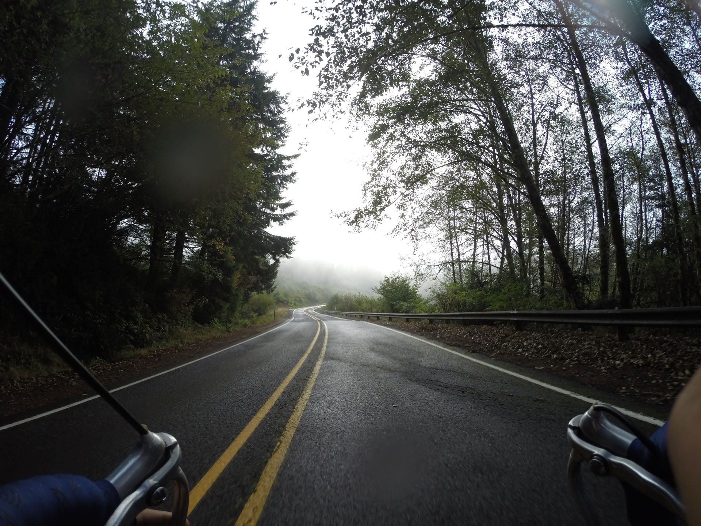
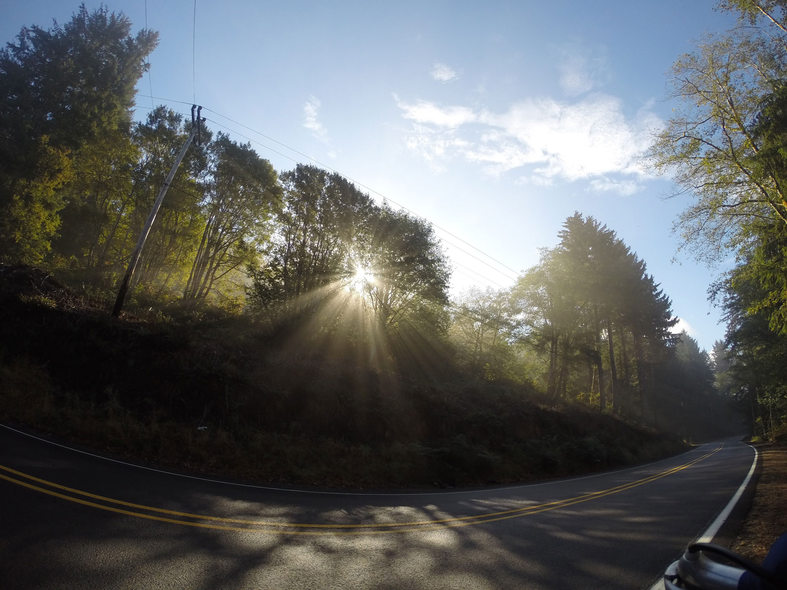

Press Kit
What is As the Raven Flies?
As the Raven Flies (ATRF) is an unparalleled cross-Canada cycle expedition spanning 15,000 km northwest from the Avalon Peninsula to the Mackenzie Delta, and south to Vancouver Island. From May to October, we will be cycling about 100 km a day; stopping in communities to listen, gather research and facilitate workshops. As we travel we will share our experience through multimedia online, creating an evocative unfolding story. Our goal is to foster a greater understanding of our Canadian context—a critical part of Canada’s 150th anniversary and a foundation from which to look to the future.
For more information please click here to open a PDF of our press release.
Images
When writing about ATRF, please use the following logos (click to download), which have been processed for web publishing.
{kind=link}
Because the expedition hasn’t yet begun, we don’t have photos directly associated with ATRF. The following images (click to download) are from Asad’s cycle tour on the Pacific coast in 2014. Please attribute images to Chairs and Tables.
Email jcr@chairsandtables.org if you’d like higher resolution or different images.
 {kind=link}
{kind=link}